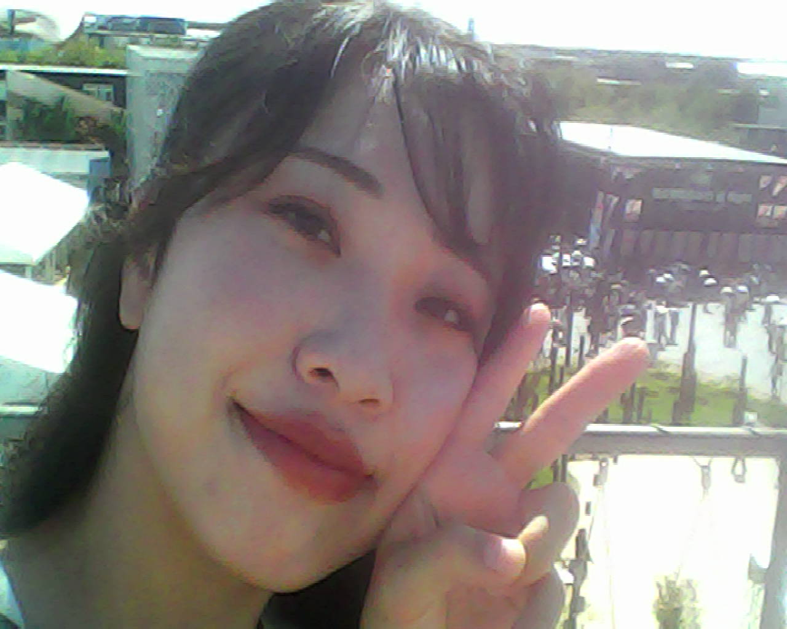
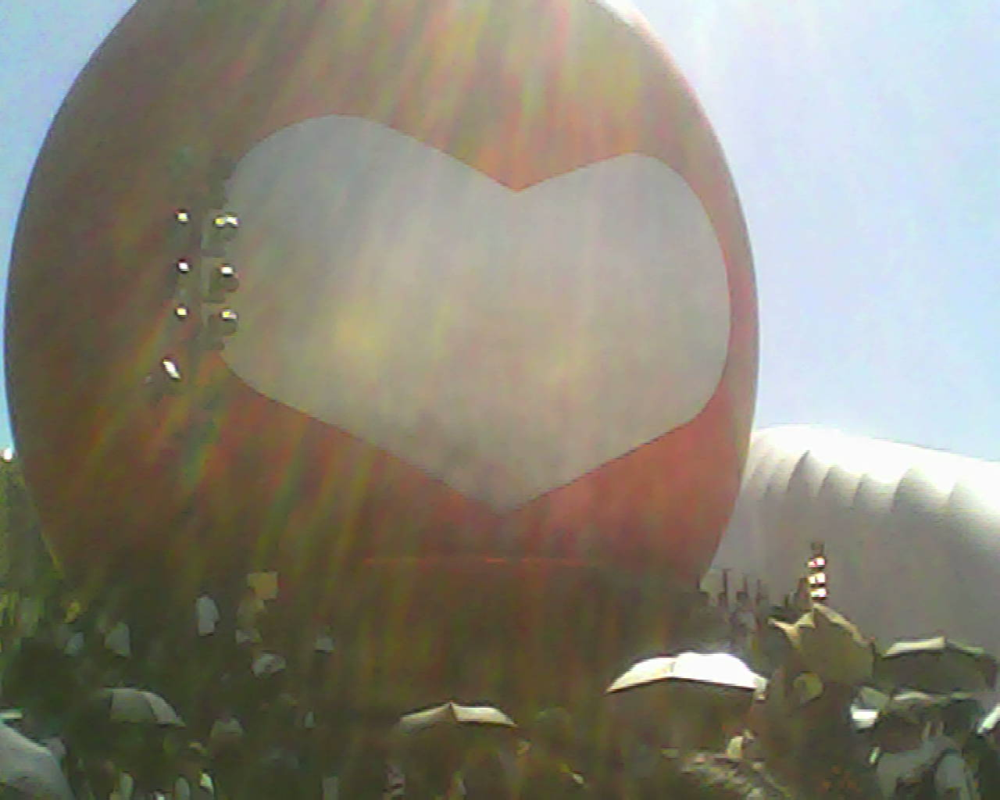
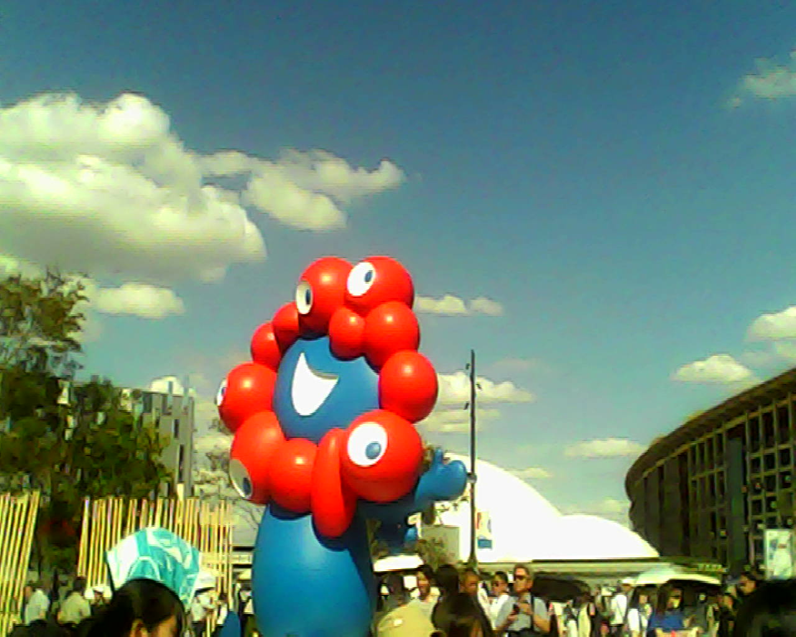
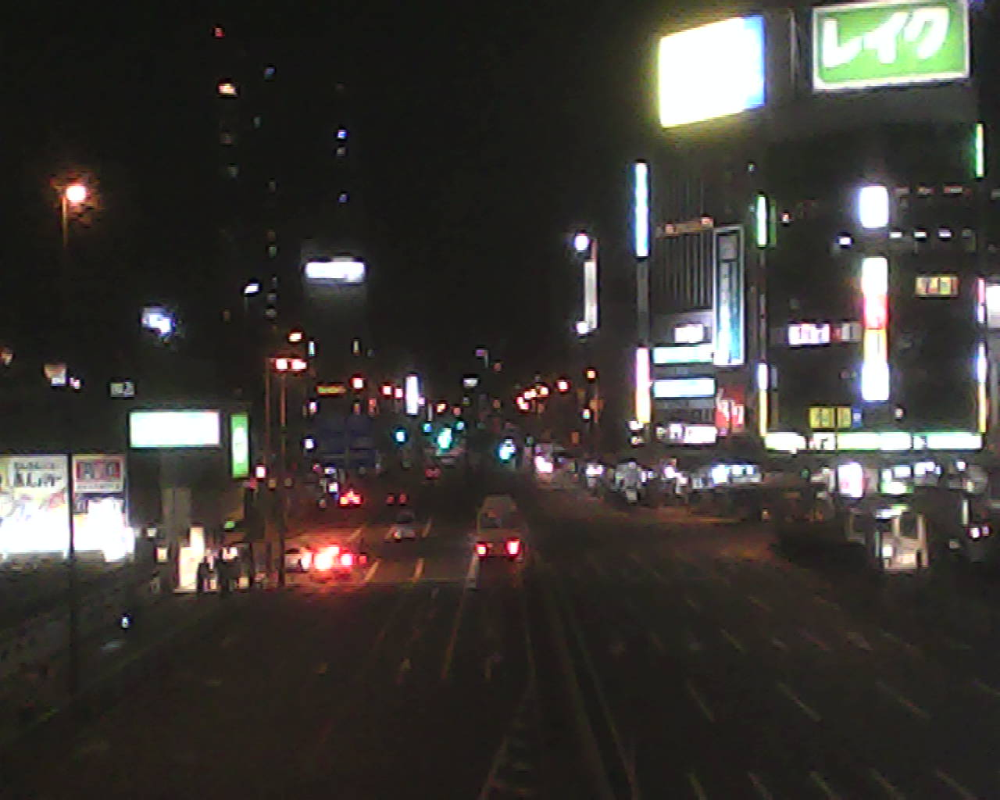
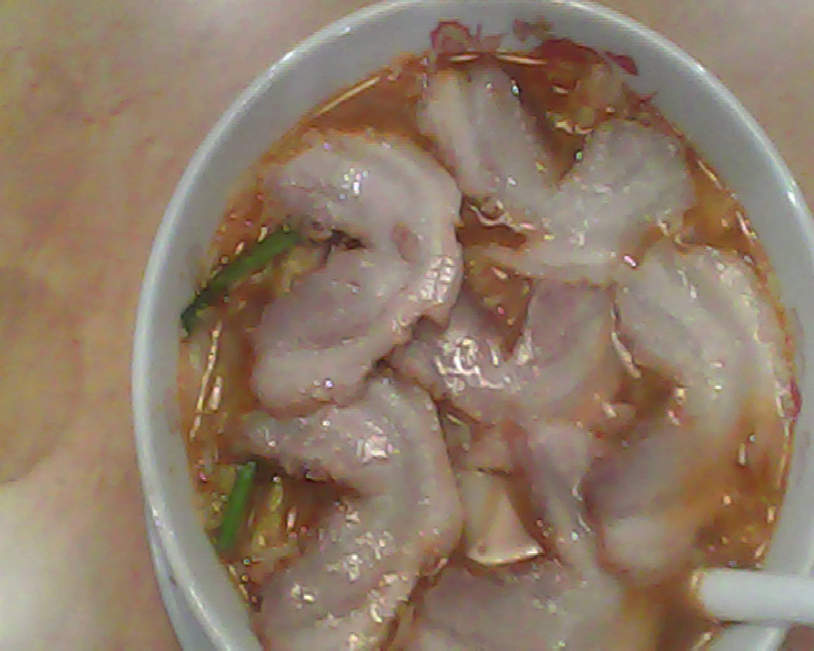
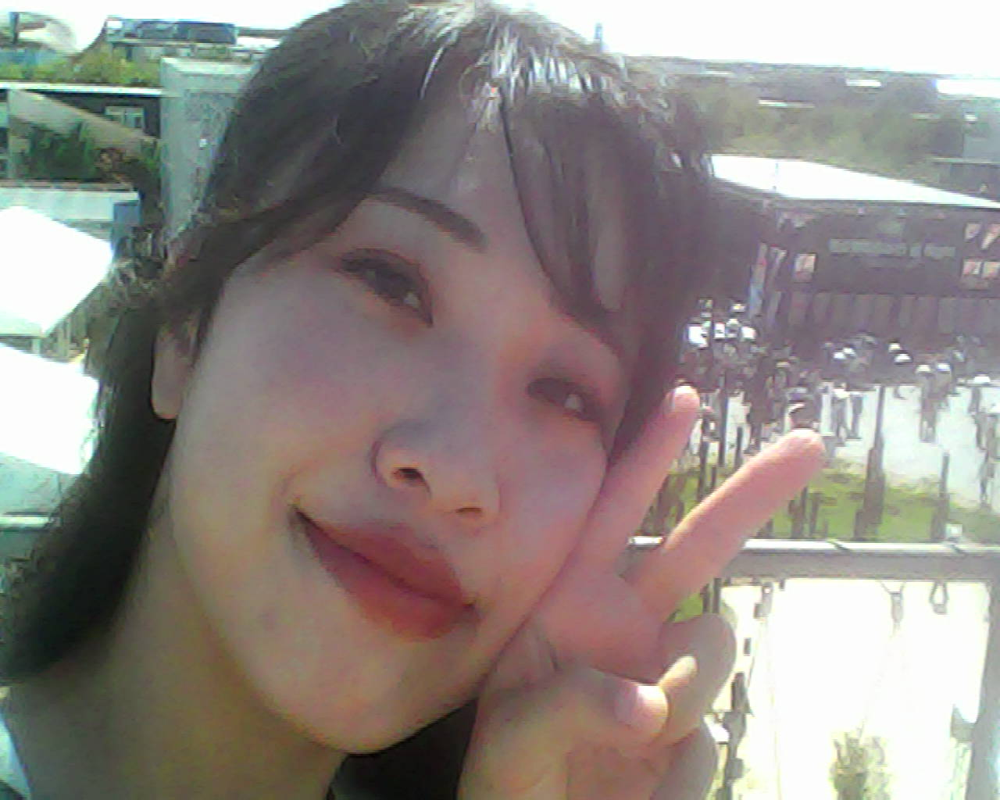
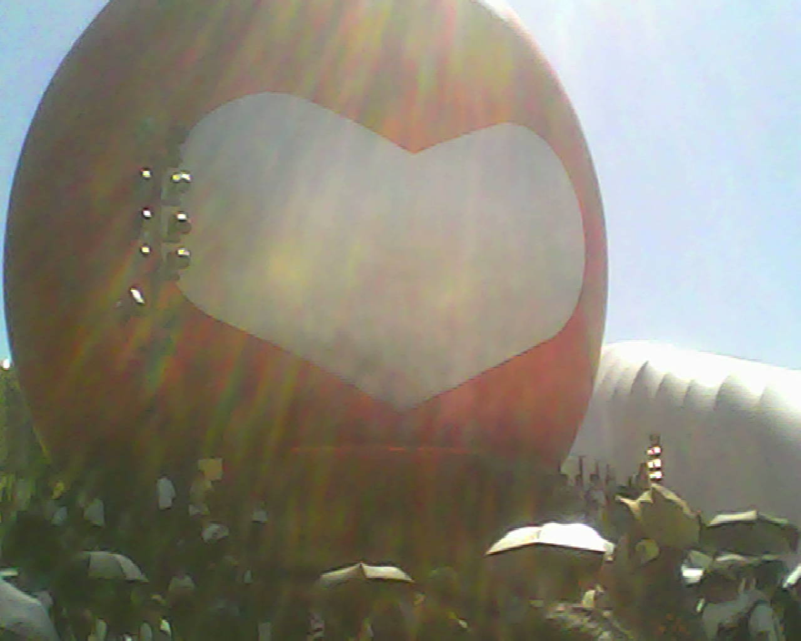
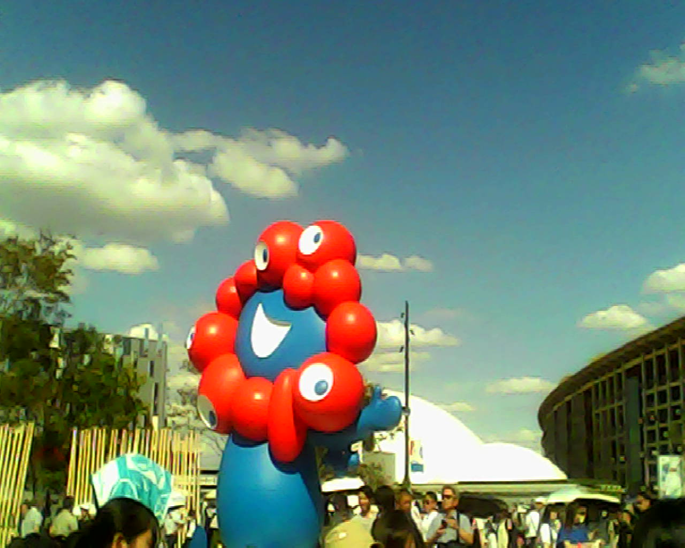
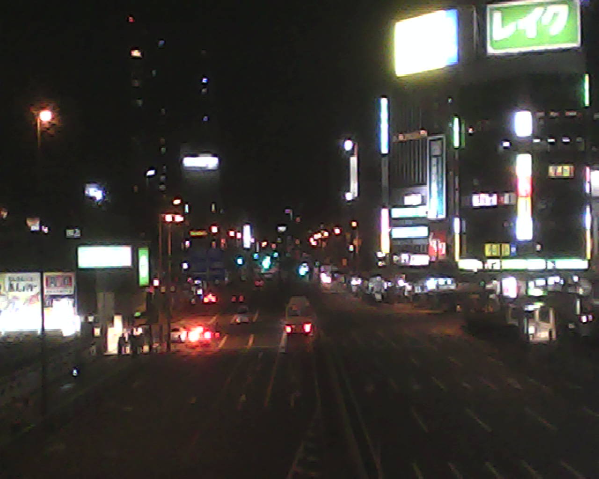
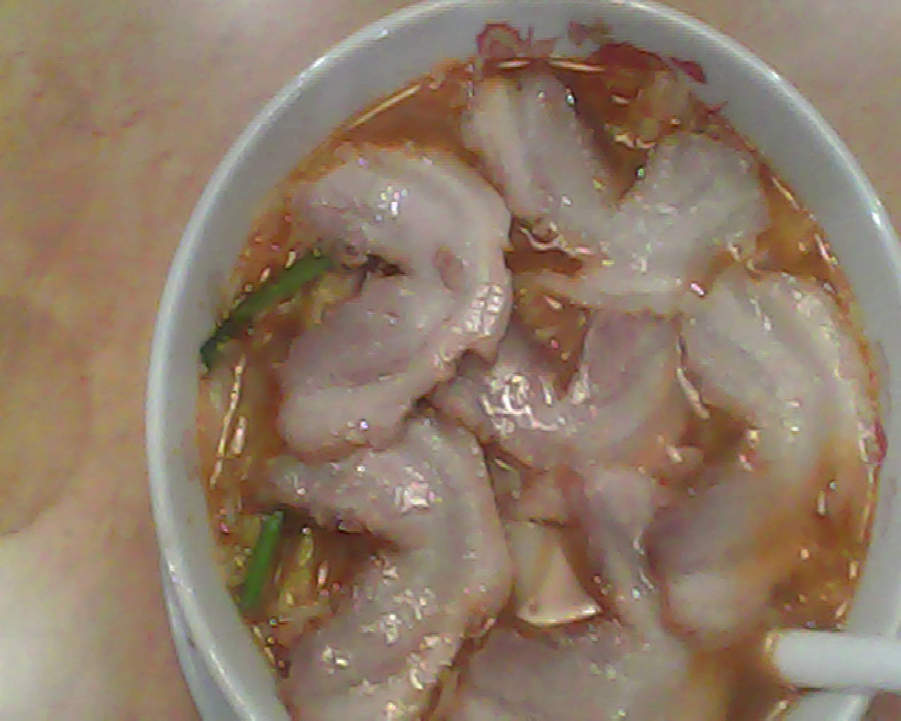

トイカメラ
pieniⅡで写真を取るのが好きです。 画質が少ないからこそレトロに可愛い写真が撮れる！ そして画素数が少ないからメモリー気にせず撮れる ！ファイルの移動が速い！最高！
万博の写真







 


最近では、パワーポイントのように簡単にホームページを制作できるサービスがたくさんあります。
しかし私は時間をかけて調べながらゆっくりとコードから書いています。
高校生の時、情報の授業ではじめてホームページを作った時、とっても楽しくて、
ずっと「自分のホームページを作りたい」と思っていました。忙しさに負けて出来ず終いでした。
今回お菓子屋さんを目指すにあたり、思い切って始めて見る事にしました。
AIに聞いたり、本で調べたりしながら絵を書くような気持ちでホームページを制作しています。
ホームページを開設したのにはもう一つ理由があります。
SNSから離れたかった。
知り合いや友達にフォローして貰える事は、とてもありがたいのですが、
フォロワーのタイムラインに半ば強制的に私の投稿が表示される事
良い友人ばかりで、SNSに投稿すれば
必ず”いいね”をしてくれたり、リアクションしてくれる方もいます。
嬉しい反面、義務のように”いいね”してくれる事に対して、上手く言えないのですが、
申し訳無さを感じています。
読みたい人が読みたい時に、見たくない人が見なくて済むような記録の仕方をずっと考えていました。
それがホームページでした。
SNSだと投稿の前に”いいね”の数や友達のリアクションを考えてしまったり、
投稿内容が偉そうじゃないか、
自意識過剰だと思われそうだから変顔も載せておこうとか、様々な事を考えすぎてしまう。
私が私のままで生きていく、表現できる方法でもあります。
楽しくて一日２時間以上書いてる時があります。完成したら落ち着くはずです。
●毛糸や布作品
お花や髪留めを作っています。 そのうち写真載せます。
●絵
上手な絵ならAIでいいんです。私が描くから意味がある。 スマホでトレースしたり、パレットを持って外へ出てみたり。 そのうち写真載せます。
●ガーデニング
リンゴの木の世話をしています。 小学生の時に植えました。暫く放置していたら幹に虫が湧いてしまった為、 最近は一生懸命世話をしています。ケムシが苦手ですが。叫びながらがんばっています。 そのうち写真載せます。 2025年の夏は昆虫が全体として少ない年だったらしいです。 リンゴの木のケムシも少なめで助かりました。 また、台風も少なかった為、未熟な果実が落ちずに秋に差し掛かり大変安堵している。 ブルーベリーとラズベリーも植えてある。 庭のお友達として14才のミシシッピアカミミガメと5歳くらいの金魚が5匹くらいいる。 カメにはたまに話しかけている。
弾ける楽器
●ウクレレ
簡単なコード弾きと超簡単なバラバラ弾きができます 最近、超簡単な作曲して大切な人にプレゼントした●三線
ピアノ？
幼少期ピアノを習っていた。今はカエルの歌しか弾けない。 でも少しだけ音感が残ってる。簡単な音当てができます。